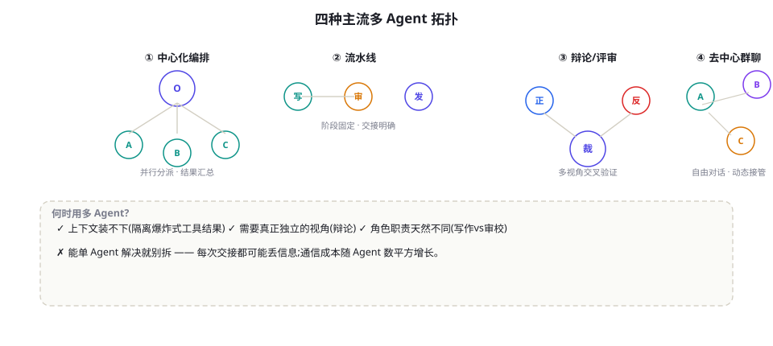
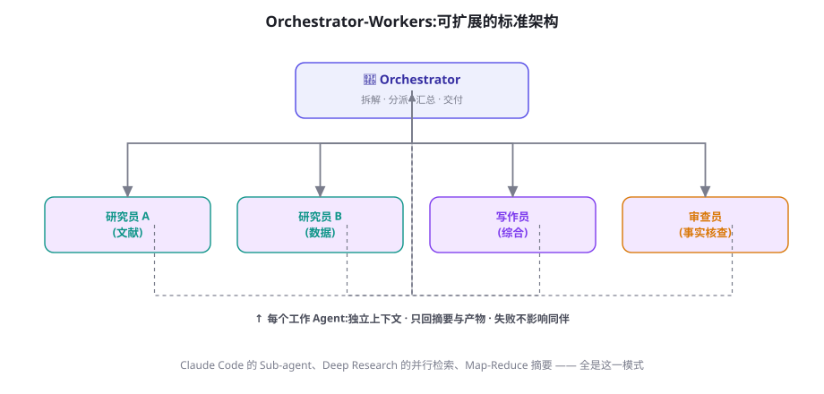

多 Agent 系统：拓扑、协作协议与角色分工
多 Agent 是 Agent 工程里最诱人也最容易被滥用的话题。本章给你一张诚实的地图：四种拓扑的适用边界、协作协议的信息流设计、成本与失败级联的数学，以及「什么时候坚决不该用多 Agent」的判据。
先回答为什么：多 Agent 要解决的三个真问题
健康的动机只有三个，逐一对照你的场景：
- 上下文装不下：单个 Agent 的窗口无法同时容纳任务的全部中间产物（比如读 50 份文档做综述）。子 Agent 用「独立上下文 + 只回摘要」实现爆炸性工作量的隔离——这是最硬的理由。
- 需要真正独立的视角：同一个上下文里的「自我批判」容易被锚定（模型倾向于认同自己刚写的），物理隔离的两个 Agent（各自独立检索后辩论）能产生更真实的对抗性。评审、安全审查类任务适用。
- 职责天然异构：规划者要强推理、执行者要快、审查者要严谨——不同角色最优的模型配置、提示词、工具集差异巨大，拆开各自优化比一个 Agent 换装更干净。
反过来说，以下动机都是危险信号：「听起来更强」「演示视频很酷」「单 Agent 偶尔出错所以多加几个互相检查」（互相检查也会互相放大错误，且成本翻倍）。Cognition 团队 2025 年的工程长文《Don't Build Multi-Agents》给出了一句被广泛引用的经验：上下文共享的需求一旦存在，多 Agent 的通信开销就会吃掉并行收益。我们的立场更温和：多 Agent 是有明确适用面的专用工具，不是默认架构。

四种拓扑的适用边界
| 拓扑 | 信息流 | 适合 | 不适合 | 代表实现 |
|---|---|---|---|---|
| 中心化编排 | Orchestrator 分派/汇总，Worker 互不通信 | 可分解的并行任务：多源研究、批量处理 | 强耦合的顺序推理 | Claude Code 子代理、Deep Research |
| 流水线 | 固定阶段顺序交接 | 角色分明的生产链：写作→审校→定稿 | 阶段数不确定的任务 | MetaGPT 的 SOP 链 |
| 辩论/评审 | 正反方独立作答，裁判综合 | 高风险判断：安全审查、事实核查 | 普通生成任务（成本不划算） | Multiagent Debate（Du et al. 2023） |
| 群聊/动态 | 共享消息流，发言权动态分配 | 探索性协作、原型期 | 生产环境（成本与不可预测性） | AutoGen GroupChat |
Orchestrator-Workers：生产环境的默认选择
中心化编排是多 Agent 的「安全牌」，值得单独展开。Anthropic 在其多 Agent 研究系统的工程复盘（2025）中给出的架构要点，与本节归纳的设计规范高度一致：
- Orchestrator 只做三件事：拆解任务、分派（含清晰的交付规格）、验收汇总。一旦它开始「亲自干活」，整个系统的层次就乱了——克制它的参与感。
- 分派规格 = 微型任务书：每个 Worker 收到「目标、范围边界、输出格式、可用工具、预算（步数/时长）」。任务书质量直接决定 Worker 产出的可用度——这与第 18 章的结构化计划同构。
- Worker 只回传摘要与产物引用：全文落盘（对象存储/文件），回传「结论 + 关键证据 + 产物路径」。这是上下文经济学（第 23 章）在多 Agent 场景的核心应用。
- 失败隔离：单个 Worker 失败不拖垮整体——重试一次，再失败则降级（该子任务标记未完成，汇总时披露）。永远避免「全员阻塞等待最慢者」。

import asyncio, json
from openai import AsyncOpenAI
client = AsyncOpenAI()
WORKER_SYSTEM = "你是专项研究员。只回答分派给你的子问题,输出 JSON: "
'{"findings": "发现(≤200字)", "evidence": ["关键证据"],
"confidence": "high|medium|low"}'
async def worker(subtask: str, tools) -> dict:
"""一个 Worker = 独立上下文的小 Agent(带自己的工具循环)"""
messages = [{"role": "system", "content": WORKER_SYSTEM},
{"role": "user", "content": subtask}]
for _ in range(8): # Worker 自己的步数预算
r = await client.chat.completions.create(
model="gpt-4o-mini", messages=messages, tools=tools)
msg = r.choices[0].message
if not msg.tool_calls:
return json.loads(msg.content)
messages.append(msg)
for tc in msg.tool_calls:
obs = await run_tool(tc) # 第 17 章的执行器
messages.append({"role": "tool", "tool_call_id": tc.id,
"content": obs})
return {"findings": "超预算未完成", "confidence": "low"}
async def orchestrator(goal: str, tools) -> str:
# 1) 强模型拆解:产出子任务书清单
plan = await client.chat.completions.create(
model="o4-mini", temperature=0, response_format={"type": "json_object"},
messages=[{"role": "user", "content":
f"把目标拆成 2~5 个互不依赖的子任务。目标: {goal}\n"
'输出: {"subtasks": ["..."]}'}])
subtasks = json.loads(plan.choices[0].message.content)["subtasks"]
# 2) 并行分派 + 失败隔离
results = await asyncio.gather(
*(worker(t, tools) for t in subtasks),
return_exceptions=True) # 失败不拖垮整体
clean = [r if isinstance(r, dict) else
{"findings": "子任务失败", "confidence": "low"}
for r in results]
# 3) 汇总
digest = "\n\n".join(f"[子任务{i+1}] {json.dumps(c, ensure_ascii=False)}"
for i, c in enumerate(clean))
final = await client.chat.completions.create(
model="o4-mini", temperature=0,
messages=[{"role": "user", "content":
f"目标: {goal}\n各子任务结果:\n{digest}\n综合为最终答案,"
"标注未完成的部分"}])
return final.choices[0].message.content经济学：多 Agent 的成本乘数
给一个真实的账本结构，帮你在立项前算清楚。Orchestrator-Workers 模式下，设任务拆成 N 个子任务，总成本 ≈ 编排成本（拆解+汇总，约 2 次强模型调用）+ N × Worker 成本（各自的多轮循环）。看起来是线性，但三个隐藏项让实际数字更大：① 任务书膨胀——Worker 的任务书常比子问题本身长（要交代背景与格式），输入成本按 N 份重复；② 重试放大——Worker 成功率 p 不高时，期望成本是 N·p⁻¹ 量级（p=0.7 时放大 1.4 倍）；③ 上下文冗余——每个 Worker 都要重新加载它所需的那部分背景，共享上下文的「复用红利」消失。经验数字：同任务下，多 Agent 方案的总成本通常为单 Agent 的 2~5 倍。这不是反对的理由，但要求收益（质量提升或时延下降）至少同倍数增长——上线前用评测把「收益」量化出来，是唯一负责任的立项方式。
成本上多 Agent 通常是输家，时延上却常是赢家：4 个 Worker 并行 3 分钟 = 串行 12 分钟。对「深度研究报告」这类用户愿意等但有限的产品，并行把交付时间压进可接受区间——这是 Deep Research 类产品选择多 Agent 的首要原因（第 73 章）。因此立项时的正确问法不是「多 Agent 值不值」，而是「这个任务的交付时延值多少溢价」。
拿走即用。一份合格的 Worker 任务书五段式：【目标】一句话交付物定义（「产出 2024-2026 年竞品定价策略对比表」）；【范围】做什么/不做什么（「只看公开发布信息，不推测内部策略」）；【资源】可用工具与数据源清单；【格式】交接物 Schema（发现/证据/置信度/未尽事项）；【预算】最多 8 步或 3 分钟，超限立即交回部分成果。这个模板的价值在评审时可复用：任何 Worker 的产出不合格，先检查任务书是否五段齐全——八成是任务书的锅，不是模型的锅。
协作协议：通信成本与信息保真
多 Agent 的核心开销不在「多个模型」而在交接。每次交接是一次潜在的语义损耗：Worker 知道的东西不会自动传递，只有写进交接物的才存在。协议设计的四条军规：
- 结构化交接物：自由文本交接 = 把理解成本推给下一环。固定 Schema（发现/证据/置信度/未尽事项）让交接可校验、可统计质量。
- 置信度必填：每个 Worker 自报置信度，Orchestrator 汇总时对低置信部分降权或触发复核——置信度校准（第 9 章）在系统层的延伸。
- 禁用「全员大会」：让所有 Agent 看到所有消息（群聊模式的生产化误区）会让每环上下文膨胀 N 倍，通信成本平方增长。消息要么点对点，要么经 Orchestrator 过滤广播。
- 交接可回放：所有消息进 trace（第 79 章），出问题能定位到「哪一次交接丢了信息」——多 Agent 排查的必备基建。
辩论模式：对抗性视角的正确用法
辩论（Debate）的学术证据值得细读：Du et al.（2023, arXiv:2305.06300）与多份后续研究显示，多模型辩论在数学推理与事实问答上有增益，但增益幅度随模型能力增强而缩小，且存在「从众化」风险（后发言者迎合前发言者）。工程启示：辩论适合高价值、可判定的判断题（这个安全策略有没有漏洞？这份合同条款有没有歧义？），并要满足三个条件——辩论方独立检索（不共享检索结果，防锚定）、裁判结构化裁决（列证据而非和稀泥）、轮数 ≤2（更多轮数的边际收益递减明显）。普通内容生成用辩论，纯粹是烧钱表演。
单 Agent 的错误是一条线；多 Agent 的错误会分形扩散：一个 Worker 的幻觉结论被 Orchestrator 采信，污染最终汇总；一个 Worker 的错误任务书理解被「如实执行」，产出大量看似可信的垃圾。三类防线：验收闸门（每个 Worker 产出过 Schema 与事实性抽查，第 57 章）、置信度传播（低置信输入不允许产生高置信输出）、人工检查点（高风险任务的最终汇总前强制人审，第 25 章）。记住这个不对称：单 Agent 出错你可以重跑；多 Agent 出错你要先弄清楚「错在谁的哪一层」——可观测性欠账在这里会被加倍催收。
失败案例研究：一次教科书式的翻车
匿名化复盘一个真实项目（细节改写，结构保留）。某团队为「自动竞品周报」上马五角色多 Agent（情报员×2、分析师、撰稿人、审校）。三个月后项目停用，四个教训逐条对号入座：教训一：角色是为组织图设计的，不是为任务——「两个情报员」实际干的是同一件事（关键词不同而已），合并后质量不变成本减半。教训二：交接物自由文本——分析师拿到的情报是两大段散文，关键数字靠它自己「领会」，每周都会领会错一两个。教训三：没有验收闸门——审校 Agent 的「审」是让同一个模型再读一遍，从未拦截过事实错误（同权重模型的自我审查锚定效应，第 57 章的偏差研究）。教训四：故障定位靠翻日志——某周的数字错误追了一下午，最后发现是某情报员的搜索词打错。停用评估时的结论很冷静：用五分之一的成本做一个单 Agent + 严格评测 + 人工终审的管线，质量相当。这个案例的每一刀，都对应本章给出的军规——多 Agent 的失败几乎从不来自「技术不够」，而来自「把组织戏仿当成了架构」。
群聊模式的正确打开方式：先原型，后毕业
给 AutoGen 式群聊一个公平的评价：它在生产里的问题（不可预测、成本高）不等于它没用。群聊是「发现角色」的工具，不是「运行角色」的工具。健康的工作流是两阶段：第一阶段用群聊跑真实任务——让模型自己「协商」出分工、话术与交接惯例（人只观察）；第二阶段把协商稳定下来的模式「毕业」为显式拓扑——谁先谁后、交接格式、升级规则，全部固化成 Orchestrator-Workers 或流水线。换言之，群聊的价值在于把「该有几个 Agent、各干什么」的答案涌现出来，然后由你固化。长期运行群聊的生产系统，几乎必然遇到发言权震荡（两个 Agent 互相谦让或互相覆盖）与成本失控；把它当 prototyping 环境，这些问题就与你无关。
框架速览与选择
第 3 部分会逐个深讲框架（第 28-33 章），这里只给多 Agent 视角的速查：AutoGen/AG2（群聊与事件驱动，适合探索与快速原型）、CrewAI（角色+流程的轻量抽象，适合明确的团队隐喻）、LangGraph（状态图，适合需要中断恢复与人审的生产编排）、MetaGPT（SOP 驱动，适合软件工程隐喻的流水线）。自研派（如 Anthropic 的工程复盘所示）的论点是：Orchestrator-Workers 的核心不过百行代码（见上），框架的价值在可观测性与人机协同等外围——这个判断在 2026 年依然成立。选型决策树见第 26 章，此处不重复。
多 Agent 系统的评测：比单 Agent 多测三件事
第 50 章的评测方法论之上，多 Agent 需要补充三个观测面。交接质量：抽样检查交接物——Schema 合规率、关键信息保留率（子问题的事实有没有出现在交接物里）。它预测的是「下游表现的上限」。贡献分解：把每个 Worker 的产出从最终答案中「扣掉」，看答案质量掉多少（leave-one-out）——持续零贡献的 Worker 就是下一轮要合并的角色。级联健康度：统计「上游低置信 → 下游高置信」的违例次数，它是防线失灵的直接证据。三者的共同点是：多 Agent 的评测对象不只是「最终答案」，还有中间协作过程的质量——后者是你可以每周改进的抓手，前者只是结果。
上下文管理的多 Agent 特殊性
第 23 章的上下文工程在多 Agent 场景多出一维：每个 Agent 的上下文组成不仅是「历史 + 工具结果」，还有「其他 Agent 的存在」。四个实操建议：Worker 的系统提示词要「窄化身份」——告诉它整个系统里只有它的任务（防止它越界补全别人的活）；Orchestrator 的上下文要「摘要态」——它看到的世界应该是各 Worker 结论的卡片流，而非原始轨迹；禁止 Worker 之间「江湖救急」式的私下通信——需要另一个 Agent 的信息时，通过 Orchestrator 走正规交接，保证信息流可审计；共享制品用「引用」不用「拷贝」——子任务共用的背景文档放对象存储，各 Agent 按指针自取，避免同一份内容在 N 个上下文里各自演化出不同版本。这四条合起来，是「上下文隔离红利」能否兑现的施工细节。
安全视角：多 Agent 是权限的放大器
每个新 Agent 都是一组新的权限与新的攻击面（第 58 章的威胁模型在此成倍放大）。三条多 Agent 特有的安全规则：① 最小知悉原则——Worker 只拿到完成子任务所需的数据切片，不要把全库权限下放给「顺便查一下」；② 信任不传递——Worker A 的输出进入 Worker B 的上下文时，按「不可信输入」对待（间接注入的载体，第 59 章），被攻陷的一个 Worker 不应能天然撬动全链；③ 出口收敛——无论系统内有多少 Agent，能触达外部世界（发邮件、付款、删数据）的工具调用必须收敛到统一网关，在那里做审计与人工闸门（第 60 章）。一个常见的反模式是「Worker 各自直连工具、Orchestrator 只管文本」——这等于把系统的安全边界溶解在编排层之下。
消息语义：点对点、广播与黑板
协作协议的底层是消息语义的选择，三种模式各有明确的容错含义。点对点（含经编排转发）：语义最清晰、可审计，是多 Agent 的默认；代价是编排层成为吞吐瓶颈。广播：一发全收，适合「全局状态变更通知」（「政策文件已更新」），但接收方各自消化会产生理解分歧——广播的消息必须是「事实通告」而非「行动指令」。黑板（Blackboard）：经典 AI 的协作模型——所有 Agent 读写一块共享结构化板面，谁有贡献谁写。它的现代形态是「共享任务表 + 事实库」（前文状态外置的变体），优点是无发送方偏置（信息不属于任何 Agent），缺点是需要精心的 Schema 设计与并发写控制。生产系统通常是「点对点为主 + 一块黑板」的混合：控制流走消息，事实沉淀走黑板。无论哪种，消息必须带类型与版本（如 task.v1 / finding.v1），否则三个月后的消费者会读不懂历史消息——协议演化是多 Agent 系统的慢性病，疫苗只能提前打。
演进路线图：从单 Agent 到平台
给一条被验证过多次的渐进路径，每一步都有明确的准入条件：阶段 0（单 Agent + 评测）——没有基线的多 Agent 都是无源之水；阶段 1（并行工具）——用第 17 章的机制兑现并行收益，观察上下文是否开始吃紧；阶段 2（2~3 个固定 Worker）——只为明确的异构职责（检索/审查）引入，评测每周跑；阶段 3（动态编排）——Orchestrator 按任务动态决定 Worker 数量与分工，此时你已有资格评估「要不要买/造多 Agent 平台」。跳级的代价是确定的：直接从阶段 0 到阶段 3 的团队，通常在三个月后回到阶段 1——带着一堆难以维护的代码。把这条路线图放进你的技术规划文档，它比任何框架选型都更能预测项目存亡。
状态与断点：多 Agent 的持久化
多 Agent 系统的运行时状态比单 Agent 复杂：全局计划、各 Worker 的进度、已完成的交接物、待重试队列。生产化的做法是把状态外置为任务表 + 制品库：一张任务表（task_id、parent、状态、任务书指针、交接物指针、置信度、重试次数）是整个系统的单一事实来源；Worker 的完整轨迹与大产物落制品库，表里只存指针。这样得到三个能力：任何时刻可恢复（Worker 崩溃按表重派）、可审计（表即日志的索引）、可人工接管（管理员直接改表状态即可干预）。第 76 章长时程检查点与第 80 章规模化架构会复用这套设计——状态外置是多 Agent 从 Demo 到平台的第一道门槛。
进阶形态：与规划、人机的融合
两个把本章机制接入全书体系的连接件。与分层规划的融合（接第 18 章）：Orchestrator 的任务书本质上就是「叶子级计划」，因此多 Agent 可以直接嫁接在 Plan-and-Execute 上——Planner 产出计划，Orchestrator 把每个叶子分派给 Worker 执行。这样得到的系统同时拥有全局方向感与并行执行力；重规划时只需重发受影响的子任务。与人工协同的融合（接第 25 章）：多 Agent 里最有价值的检查点往往是「Orchestrator 汇总之后、动作执行之前」——此时人看到的是结构化的计划与依据，审批成本最低。产品化的多 Agent 系统几乎都有这个「汇总-人审-执行」的三段闸门。
上多 Agent：上下文爆炸型任务（批量研读/多源综述）、时延敏感的高价值交付、需要独立对抗视角的审查。不上：单 Agent 评测未达标（先修单 Agent）、任务可由 ≤5 步线性流程表达、团队尚无可观测性基建。折中起步：并行工具调用（第 17 章）+ 单 Agent 内的子任务清单（第 18 章）——这两件「穷人的并行」能覆盖你想象中一半的「需要多 Agent」场景。
反模式清单：这些信号出现时，砍掉一个 Agent
- 两个 Agent 交替输出同一类内容——你是想要「看起来热闹」，合并为一个。
- Worker 的工具集与 Orchestrator 高度重叠——拆分的意义只剩并行，考虑用第 17 章的并行工具调用替代。
- 交接物越长越详细——说明任务书写不清，先修任务书再谈多 Agent。
- 定位一次故障需要人肉追五层日志——先建 trace，再保留多 Agent。
- 成本是单 Agent 的 3 倍而评测提升不到 10%——用评测数字做砍掉的决策，不要用「感觉更聪明了」。
三个高频疑问
Q：多 Agent 与「单 Agent 多次调用」的边界在哪？判据看两点：是否需要独立的上下文起点（子任务的中间产物不该污染彼此）与是否需要不同配置（模型/提示词/工具集）。两者都不需要时，同一 Agent 顺序多次调用即可——它更便宜、更好调试。Sub-agent 的本质是「上下文的函数调用」：传参（任务书）、返回值（交接物）、局部变量（子上下文用完即弃）。用这个编程类比理解，多 Agent 就不再神秘。
Q：Agent 数量有最优值吗？没有魔法数字，但有结构性约束：Worker 数 ≤ 并行收益能覆盖交接成本的数量。实践里大多数任务的最优值在 2~5——超过 5 个 Worker 时，Orchestrator 的汇总上下文开始吃紧，交接质量问题线性上升。如果你的任务看起来需要 20 个 Worker，先怀疑「拆解粒度太细」而不是「系统不够大」。
Q：怎么向管理层解释「我们不需要多 Agent」？用数字替代名词：给出单 Agent 方案的评测基线、多 Agent 方案的预估成本（本节的账本模型）与预期收益区间，然后申请「两周做一次 spike 对比实验」。让数据做这个决定，而不是让 Demo 视频做。
本章最后，给出一个帮助决策的「三问速查」。上线多 Agent 前，依次回答：一问上下文——单 Agent 方案的上下文是否真的装不下（还是只是没做压缩）？二问独立性——子任务之间是「真并行」（互不依赖、可独立验收）还是「伪并行」（实际是一条链）？三问收益——预期收益是质量、时延还是成本？多 Agent 在时延上占优、质量上五五开、成本上几乎必输——你的收益落在占优区了吗？三问都过，放心上多 Agent；任何一问含糊，先用第 17 章的并行工具调用与第 23 章的上下文压缩做「穷人的多 Agent」，往往已经解决问题。
从认知负载的角度重看一遍本章——为什么多 Agent 这么容易翻车？因为它把「组织行为学」引入了软件工程：分工、交接、信息损耗、责任扩散，这些人类组织里被研究了一个世纪的问题，全部在 Agent 系统里重现。你过去在人类团队里的每一分协作经验——任务书要写清楚、会议要少开、责任要落到人、信息要留痕——都直接适用于此。这也是为什么本章的建议听起来处处像管理学的翻版：多 Agent 工程的成熟，本质上是把管理学的常识用协议和代码固化。反过来说，凡是你在人类组织里见过会翻车的协作模式（全员大会决策、口头交接、多头领导），在 Agent 世界里一样会翻车，而且翻得更快。
本章小结
- 多 Agent 的正当理由只有三个：上下文隔离、独立视角、职责异构；其余动机多是危险信号。
- 四种拓扑中，Orchestrator-Workers 是生产默认：任务书下行、摘要与产物上行、失败隔离。
- 交接是核心开销：结构化交接物 + 置信度必填 + 禁全员大会 + 全链路可回放。
- 辩论适合高价值可判定的判断题，需独立检索与结构化裁决，轮数 ≤2。
- 级联失败是多 Agent 特有风险：验收闸门、置信度传播、人工检查点三道防线。
- 多 Agent 通常成本 2~5 倍，但时延可为几分之一——并行收益按「交付时延的溢价」立项。
自测题
- 用「三个真问题」检验你见过的一个多 Agent 项目：它的动机属于哪一类？还是三类都不占？
- 为什么「Worker 互不通信」反而是生产系统的优点？什么信号说明你需要让它们通信（以及更好的替代方案）？
- 设计一个「文档合规审查」的辩论系统：正反方各检索什么？裁判的裁决 Schema 长什么样？
- 级联失败的三道防线各自拦截哪一类错误？如果只能保留一道，你留哪个，为什么？
- 把一个你熟悉的单 Agent 用「任务书五段式」拆成 2 个 Worker：哪一段最难写？这说明了什么？
参考文献与延伸阅读
- Anthropic (2025). How we built our multi-agent research system. anthropic.com/engineering
- Du, Y. et al. (2023). Improving Factuality and Reasoning in Language Models through Multiagent Debate. ICML 2024. arXiv:2305.06300
- Qian, C. et al. (2023). MetaGPT: Meta Programming for a Multi-Agent Collaborative Framework. ICLR 2024. arXiv:2308.00352
- Wu, Q. et al. (2023). AutoGen: Enabling Next-Gen LLM Applications via Multi-Agent Conversation. arXiv:2308.08155
- Cognition (2025). Don't Build Multi-Agents: Principles of Context Engineering. cognition.ai 博客（反方视角，必读）
- Li, J. et al. (2023). More Agents Is All You Need. arXiv:2402.05120（采样-投票视角的多 Agent 收益上限分析）